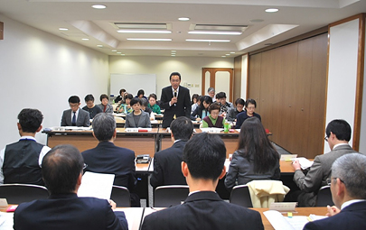

|
|
埼玉県消費者大会実行委員会 11月9日(月)13:30より、さいたま共済会館505会議室にて、埼玉県と第51回埼玉県消費者大会実行委員会との懇談会が開催されました。埼玉県から25人(16課)、実行委員会から23人(11団体、事務局)が出席し、要請書から抜粋した各項目について埼玉県より口頭回答があり、回答を受けて、要請項目の理解を深める発言や、質疑応答を行いました。  1．あいさつ 埼玉県県民生活部消費生活課山本好志課長：消費者大会では、幅広い消費者課題について、活発な論議が行われていると実際に参加して感じました。参加されている皆さんの意欲が高く、どうすれば消費者を被害から守れるか、自らできることを皆さんで真剣に論議されていました。今日はいただいた要請に回答させていただく場であり、真摯に向き合っていかなければいけないと思っています。ご意見をいただきながら、本日の懇談を充実させていきたいと思っています。 第51回埼玉県消費者大会廣田美子実行委員長：懇談を設けていただきありがとうご ざいます。また、日頃から消費者団体へご理解、ご協力をいただき感謝しております。消費は生活のすべてに関わることです。最近は医療や介護の状況も変化しています、また、食品表示も変わってきています。平和についても大きな動きがありました。こうした中、消費者が自らできることを考えていますが、消費者だけでは解決しない問題もあります。率直な意見交換を行い一緒に考えていく場としたいと思います。 2．要請書について概要説明（岩岡 宏保 大会事務局長） 大会基調報告内容から要請の要因となるくらしの背景・社会情勢をもとに、前半 ｢再生可能エネルギー・原発と放射能問題・環境｣｢くらし・医療・介護・福祉｣、後半｢教育・子育て｣｢消費者行政｣｢農業と食の安全｣｢核兵器の廃絶｣｢防災・被災者支援｣について説明しました。 3．埼玉県の回答 要請事項の抜粋項目について、担当課からの口頭回答がありました。 4．質疑応答 埼玉県からの回答を受けて、要請項目についての理解を更に深めるために消費者大会実行委員会の参加者から、8項目について9人が発言を行いました。 |